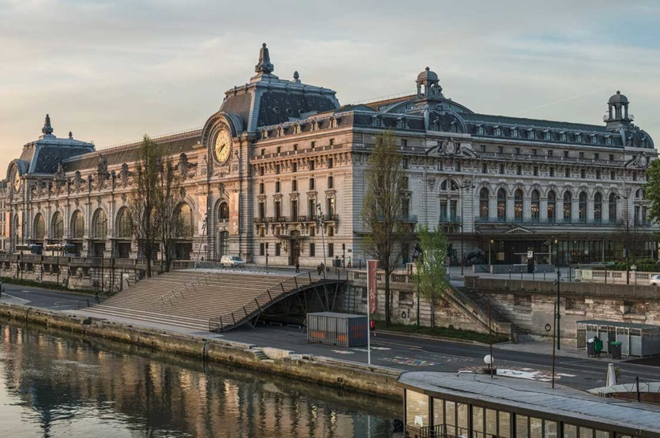

Musee d' Orsay, Paris
The Musée d'Orsay is a museum located in Paris, France, on the Left Bank of the Seine. The museum holds mainly French art dating from 1848 to 1914, including paintings, sculptures, furniture, and photography. It is it known for having the largest collection of Impressionism and post-Impressionism masterpieces in the world, by painters including Claude Monet, Édouard Manet, Degas, Renoir, Cézanne, Gauguin, and van Gogh.
In 2022 the museum had 3.2 million visitors, up from 1.4 million in 2021. It was the sixth-most-visited art museum in the world in 2022, and second-most-visited art museum in France, after the Louvre.
